Карты сокровищ¶
Карта сокровищ — обрывок настоящей карты вашего мира с красным крестом. Щёлкните по ней правой кнопкой, чтобы прочитать, найдите место, раскопайте землю киркой и откройте Зарытый сундук под ней. У каждой карты есть вид: он решает, что лежит в сундуке.
Обрывок старой карты: настоящие берега, холмы и красный крест. Используйте, чтобы прочитать. Копайте киркой у креста; открыть сундук может только владелец карты.
Откуда выпадают карты¶
Карта сокровищ — валюта, выпадающая из сундуков, сундуков подземелий, элитных врагов, боссов (вес 240 в выборе валюты, с 1-го уровня предмета); обычные существа её не роняют. Как выбирается валюта добычи, описано на странице добычи. Карта ведёт в землю того уровня, на котором выпала.
Сигрид Дальняя Дорога продаёт по одной в каждый визит, и валюта погребальных кораблей тоже может оказаться картой.
Дополнительные карты из дерева ремесла¶
Два кластера дерева ремесла дают шанс дополнительной карты сокровищ: один (Timber) — с убитых элитных врагов и боссов, другой (Горн) — из открытых сундуков и сундуков подземелий. Шансы складываются.
| Название | Эффект | |
|---|---|---|
| Bounty Maps | +5% chance of an extra treasure map from kills | |
| Cache Reader | +5% chance of an extra treasure map from chests | |
| Treasure maps from chests | +2% chance of an extra treasure map from chests | |
| Treasure maps from chests | +2% chance of an extra treasure map from chests | |
| Treasure maps from chests | +2% chance of an extra treasure map from chests | |
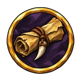 |
Treasure maps from kills | +2% chance of an extra treasure map from kills |
| Treasure maps from kills | +2% chance of an extra treasure map from kills | |
| Treasure maps from kills | +2% chance of an extra treasure map from kills |
Виды карт¶
Вид карты выпадает вместе с ней, по весу каждого вида. Карта с видом называется по виду и земле («Карта сокровищ: оружие · Болото»), а её значок показывает вид; подсказка говорит, что лежит в сундуке.
| Название | В сундуке | Шанс | |
|---|---|---|---|
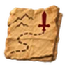 |
Карта сокровищ: оружие | оружие | 13.89% |
| Карта сокровищ: броня | броня и щиты | 13.89% | |
| Карта сокровищ: валюта | валюта всех видов | 13.89% | |
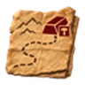 |
Карта сокровищ: сплавы и глифы | сплавы и глифы | 11.11% |
| Карта сокровищ: руны | руны, в том числе великие | 11.11% | |
| Карта сокровищ: бижутерия | кольца, пояса и тринкеты | 9.26% | |
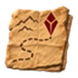 |
Карта сокровищ: самоцветы | самоцветы дерева | 7.41% |
| Карта сокровищ: камни умений | камни умений | 7.41% | |
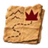 |
Карта сокровищ: уникальное | один уникальный предмет | 4.63% |
| Карта сокровищ: комнаты Чертогов | комнаты Чертогов клятв с уровня карты 19 |
7.41% |
Вид с уровнем под ним не участвует в броске ниже этого уровня карты; там его шанс делят остальные виды.
Что лежит в сундуке¶
Уровень сундука (в подсказке карты — уровень награды) — уровень земли, где зарыт клад: уровень её биома (или арены).
Сундук много раз бросает добычу босса своего уровня и оставляет только предметы своего вида, со своей увеличенной на 150% редкостью; ваши количество предметов в сундуке и редкость добычи сундуков добавляются к ним. Открытый сундук выбрасывает предметы по 2.
Что оставляет каждый вид (сама карта сокровищ не остаётся никогда):
- Карты оружия: оружие, луки тоже, и уникальное оружие.
- Карты брони: шлемы, нагрудники и поножи, плащи и щиты, и уникальные среди них.
- Карты украшений: кольца, пояса и прочие полезные предметы, тринкеты.
- Карты самоцветов: неуникальные самоцветы дерева.
- Карты камней умений: камни умений.
- Карты валюты: валюта любого вида, кроме камней умений и самоцветов.
- Карты рун: руны и великие руны.
- Карты сплавов и глифов: сплавы и глифы.
- Карты комнат чертогов: комнаты Чертогов клятв.
- Карта сокровищ: уникальное: ровно один уникальный предмет уровня сундука (если на этом уровне их нет — один из уникальных предметов самого низкого уровня).
Карта сокровищ: сплавы и глифы¶
Сверх оставленного сундук этого вида делает 4 попыток выбросить свои предметы, каждую с шансом 100%:
| Предмет | Количество | Доля |
|---|---|---|
| 1–2 | 4.85% | |
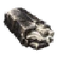 Курганное серебро |
1–2 | 4.85% |
| 1–2 | 4.85% | |
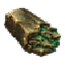 Топяная бронза |
1–2 | 4.85% |
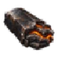 Углесталь |
1–2 | 4.85% |
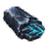 Сплав летящей руны |
1–2 | 4.85% |
| 1–2 | 4.85% | |
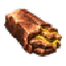 Громовая медь |
1–2 | 4.85% |
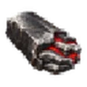 Ратная сталь |
1–2 | 4.85% |
| 1–2 | 4.85% | |
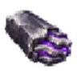 Шепчущее серебро |
1–2 | 4.85% |
| 1 | 2.91% | |
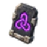 Глиф трёх узлов |
1 | 2.91% |
| 1 | 2.91% | |
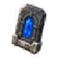 Глиф глубин |
1 | 2.91% |
| 1 | 2.91% | |
| 1 | 2.91% | |
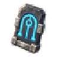 Глиф памяти |
1 | 2.91% |
| 1 | 2.91% | |
| Размыкающий глиф суффиксов | 1 | 2.91% |
| 1 | 2.91% | |
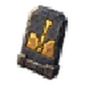 Отсеивающий глиф |
1 | 2.91% |
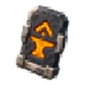 Глиф закалки |
1 | 2.91% |
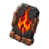 Глиф последнего жара |
1 | 2.91% |
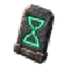 Глиф отсрочки |
1 | 2.91% |
| 1 | 2.91% | |
| 1 | 2.91% |
Карта сокровищ: руны¶
Сверх оставленного сундук этого вида делает 8 попыток выбросить свои предметы, каждую с шансом 100%:
| Предмет | Количество | Доля |
|---|---|---|
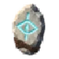 Руна прозрения |
3–6 | 29.43% |
| 3–6 | 23.54% | |
| 2–4 | 20.6% | |
| 2–4 | 11.77% | |
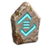 Руна нового торга |
1–3 | 11.77% |
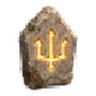 Великая руна Ярла |
1 | 1.32% |
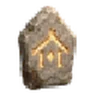 Великая руна Возвращения |
1 | 0.44% |
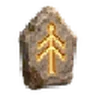 Великая руна Восхождения |
1 | 0.29% |
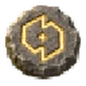 Великая руна Пробуждения |
1 | 0.29% |
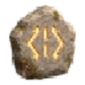 Великая руна Забвения |
1 | 0.24% |
| 1 | 0.15% | |
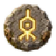 Great Rune of First Essence |
1 | 0.15% |
Карта сокровищ: камни умений¶
Сверх оставленного сундук этого вида делает 4 попыток выбросить свои предметы, каждую с шансом 100%:
| Предмет | Количество | Доля |
|---|---|---|
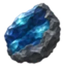 Неогранённый камень эффекта |
1 | 29.55% |
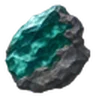 Неогранённый камень поддержки |
1 | 29.55% |
| 1 | 25% | |
| 1 | 15.91% |
Карта сокровищ: комнаты Чертогов¶
Сверх оставленного сундук этого вида делает 3 попыток выбросить комнату чертогов, каждую с шансом 100%: комната выбирается по весам комнат среди тех, что может дать сундук там, где лежит клад (его биом; комната босса — когда этот босс повержен; где выпадают комнаты).
Где лежит клад¶
Карта ведёт в самую дальнюю землю, уровня которой достигает уровень карты. Награда — уровня этой земли.
| Уровень карты | Биом | Карта без вида | Уровень награды |
|---|---|---|---|
| 1–18 | Луга | Карта забытого клада Лугов | 1 |
| 19–42 | Черный лес | Карта забытого клада Чёрного леса | 19 |
| 43–76 | Болото | Карта забытого клада Болот | 43 |
| 77–96 | Гора | Карта забытого клада Гор | 77 |
| 97–129 | Равнины | Карта забытого клада Равнин | 97 |
| 130–180 | Туманные земли | Карта забытого клада Туманных земель | 130 |
| 181+ | Пепельные земли | Карта забытого клада Пепельных земель | 181 |
Клад лежит в 250–1400 м от места, где найдена карта, в земле карты, на сухом ровном месте: не в воде, не в лаве, не на берегу и не на склоне, дальше 15 м от края любой локации, вне расчищенных мест, не ближе 25 м к постройкам игроков и обережным камням, 60 м от другого клада и не дальше 9600 м от центра мира.
Карта всегда находит место: если рядом нет её земли, поиск идёт кольцами через 400 м до 12000 м, затем в предыдущие земли.
Если место позже застроят, клад переносится рядом и карта перерисовывается: «Место вашего клада застроили: клад перенесён, карта перерисована».
Как открыть сундук¶
Сундук зарыт под крестом: «Откопайте землю над крышкой». «Открыть его может только владелец карты»: открывает тот, у кого в сумке непрочитанная карта, и карта становится «Прочитанная карта». Карта, для которой место не нашлось, говорит «Чернила расплылись: карта никуда не ведёт»; карта из другого мира — «Этот клад находится в другом мире».
Если карта была потрачена на сундук, который так и не открылся, его может открыть игрок, потративший карту.
Данные из Path of Valheiman 6.0.12, извлечены 2026-11-13.